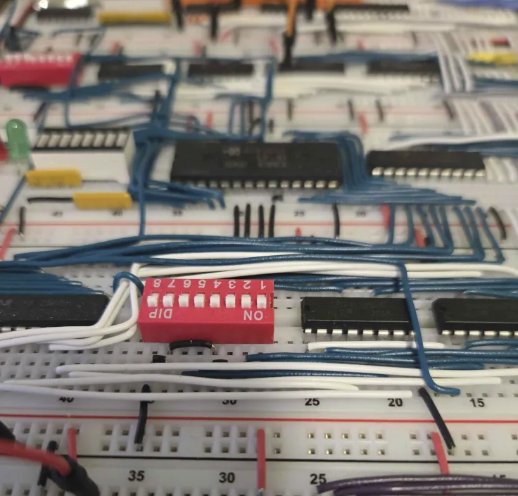
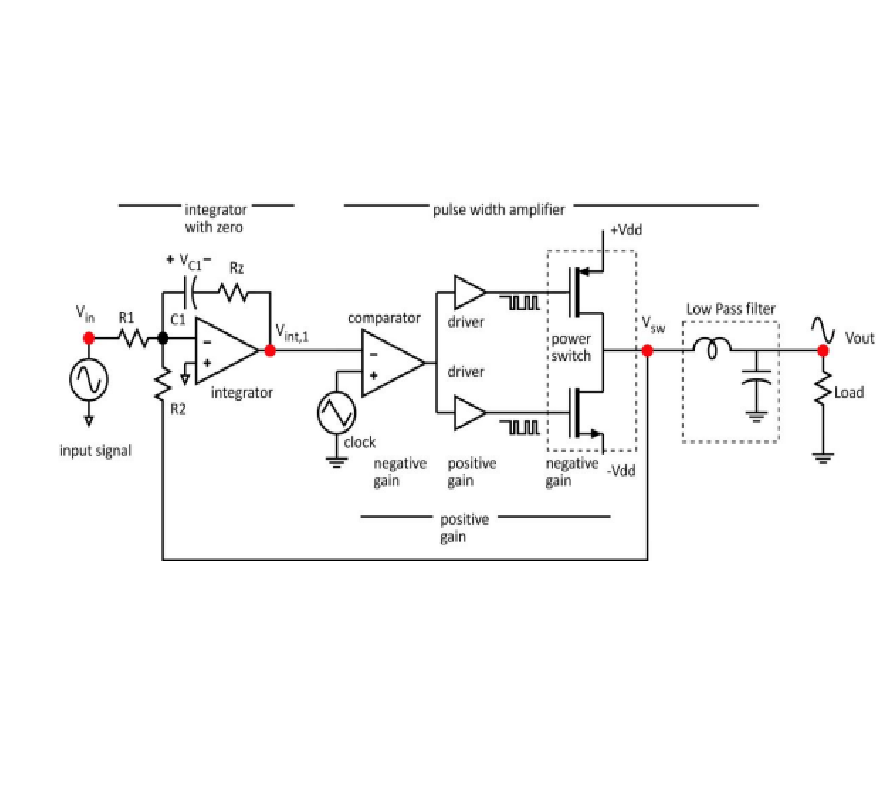
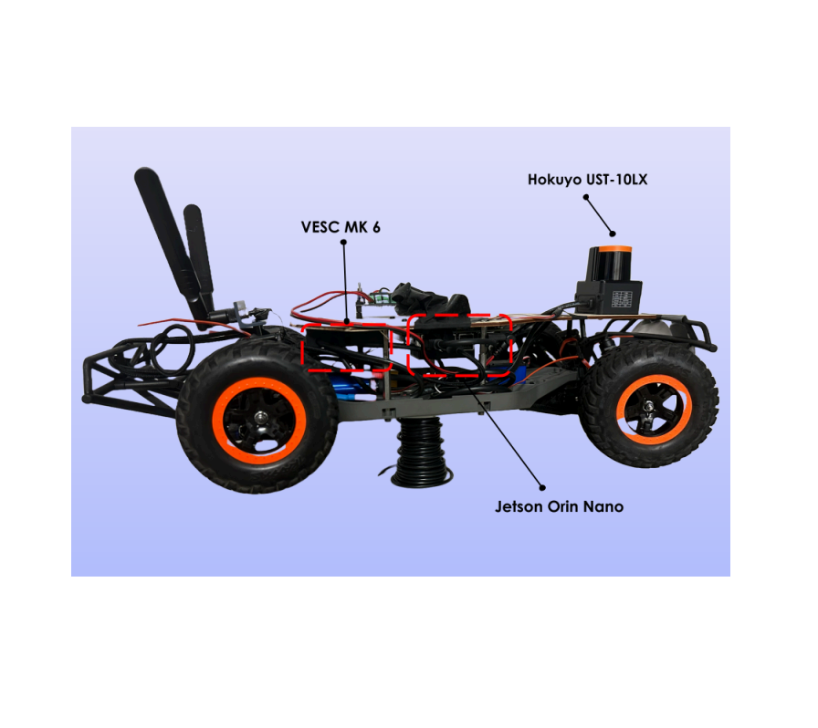
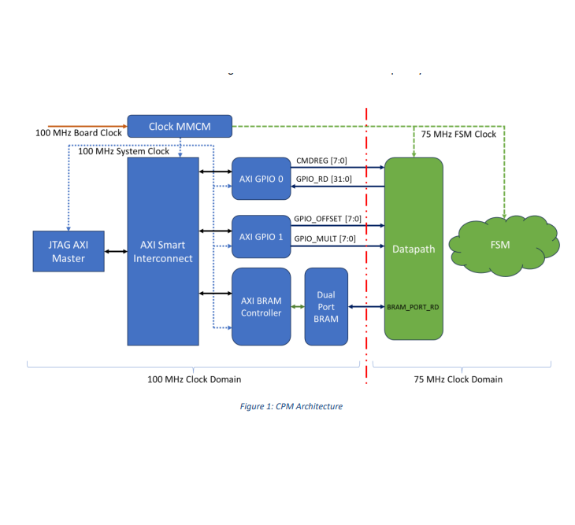
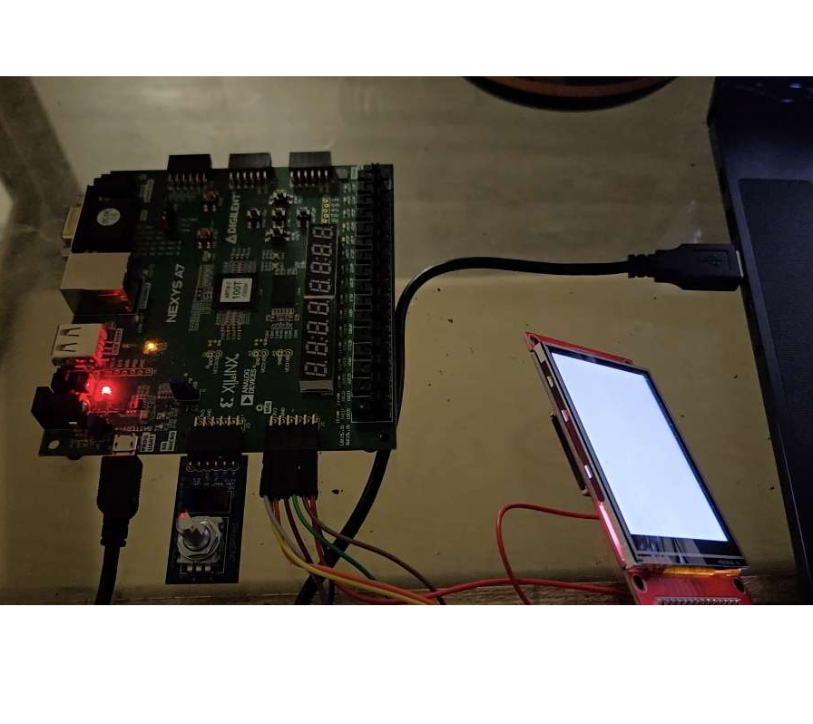
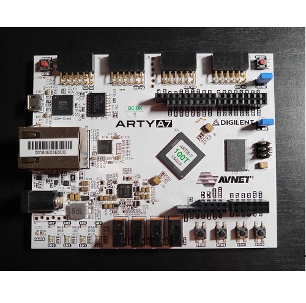
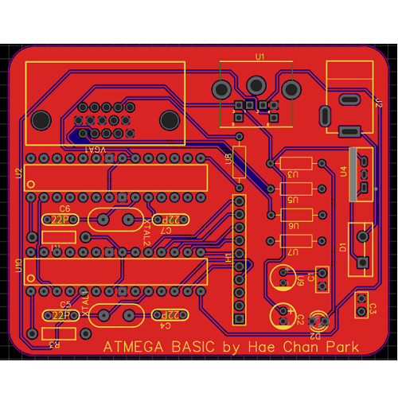
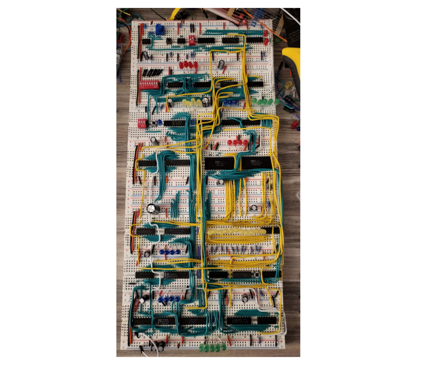
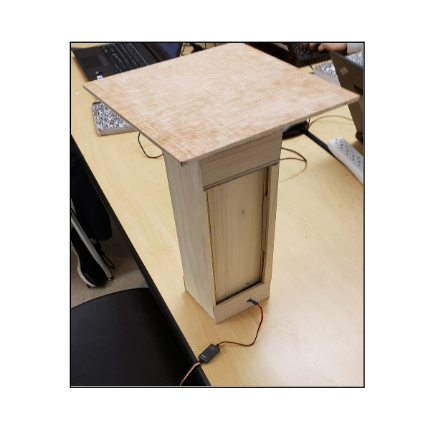

8-Bit CPU
🕗 June 2025 - August 2025
📍 Dublin, CA
Revisiting the 4-bit processor project but this time improving power distribution, clockspeed, and adding more instructions.

Class D Audio Amplifier
🕗 May 2025 - June 2025
📍 Santa Barbara, CA
Built a Class D audio amplifier using integrators, comparators, an LC filter, and a driver stage to work with 8 Ohm load. Driver stage designed with MOSFETs.

Autotenth Autonomous Car
🕗 September 2024 - June 2025
📍 Santa Barbara, CA
Worked with a team of four engineers to build an autonomous 1/10th scale car using ROS and various sensors to navigate tracks and won 2nd in the tournament.

Command Processor Module (CPM)
🕗 May 2025 - June 2025
📍 Santa Barbara, CA
Built a simple CPM that processes commands received via JTAG AXI interface and executes operations using BRAM.

Chromatic Tuner
🕗 September 2024 - December 2024
📍 Santa Barbara, CA
Built a chromatic tuner using the Nexys A7 FPGA board to detect the frequency of an audio signal.

FPGA Board Tests
🕗 June 2023 - August 2023
📍 Santa Barbara, CA
Using the Digilent ARTYA7 Artix-7 100T FPGA board along with Vivado Suite and Verilog to develop basic tests to test chips. Worked with the Kim Group @ UCSB.

ATmega328 Computer
🕗 June 2023 - August 2023
📍 Santa Barbara, CA
Rudimentary 8-bit functional computer that runs a version of Basic through the usage of two ATmega328PU chips.

IIC-1 Breadboard Processor
🕗 February 2023 - April 2023
📍 Santa Barbara, CA
A fully functional 4-bit breadboard processor built from over 25+ 7400 series TTL chips and other relevant components.

Waste on Wheels Robot
🕗 January 2022 - April 2022
📍 Santa Barbara, CA
Led a team of three to design an Arduino-based robot designed to prevent littering and environmental damage equipped with various sensors and a Pixy2 camera.
Personal Website
🕗 June 2021 - Present
📍 Dublin, CA
You are looking at it! A personal website to showcase my skills, projects, and experiences. Built using HTML+CSS.

CovFo/DIPS
🕗 April 2020 - May 2020
📍 Dublin, CA
The product is made to make the lives of people safer using a virus tracker application and system during the COVID-19 Pandemic.

Squarefold
🕗 May 2019 - June 2019
📍 Dublin, CA
Squarefold is an innovative solution to resolve the growing issue of space in urban areas.